<header>
    <!--Navbar-->
      <nav class="navbar navbar-expand-lg" >
          
              <a class="navbar-brand" [routerLink]="'/'">
                
                Guía Porcisoft
              </a>
              <button class="navbar-toggler" style="color: white;" type="button" data-toggle="collapse" data-target="#navbarSupportedContent" aria-controls="navbarSupportedContent" aria-expanded="false" aria-label="Toggle navigation">
                
                
              </button>
            
              <div class="collapse navbar-collapse" id="navbarSupportedContent">
                <ul class="navbar-nav mr-auto">
                  <li class="nav-item active">
                    <a class="nav-link" [routerLink]="'/'">Inicio </a>
                  </li>
                  <li class="nav-item ">
                    <a class="nav-link" [routerLink]="['manualUsuario']" >Manual de usuario</a>
                  </li>
                </ul>
              </div>
            
          
        </nav>
  </header>
 